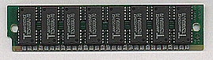
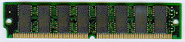
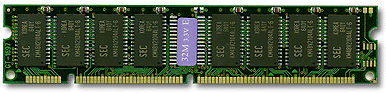
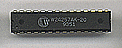
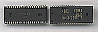
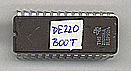

Memorijski mediji
u kompjuteru
- Dinamièka memorija
- Statièka memorija
- Prenosivi memorijski mediji
 |
SIMM, 30 pin-a |
 |
SIMM, 72 pin-a |
 |
DIMM, SDRAM, 168 pin-a |
 |
CACHE |
 |
SOJ, video memorija |
 |
EPROM, BOOT ROM |
| |
|
| |
|
Dinamièka memorija
mora se svakih nekoliko delova sekunde osvežavati. Podaci se
nepovratno gube prestankom napajanja. Kompjuteri koriste: RAM,
ROM, EPROM itd. memorijske module.
- RAM (Random Accsess Memory) Memorija sa sluèajnim
pristupom. Može se pristupati, pisati i brisati na bilo
kojoj adresi. DIMM, SIMM ili SIPP modulima od 256 kB, 1,
4, 16 ili 32 MB. Vreme pristupa 70ns.
- ROM (Read Only Memory) samo za izèitavanje sadržaja
ranije (fabrièki) upisanog u nju. Vreme pristupa 120ns.
- PROM (Programmable Read Only Memory) samo za izèitavanje
sadržaja ali možete, samo jednom, ranije snimiti sadržaj
u njega. Poreban Vam je programator. Vreme pristupa
120ns.
- EPROM U programibilnim èipovima od 64 kB pa nadalje.
Sadržaj EPROM-a može se posebnim ureðajima (sa UV
zracima) obrisati i naknadno upisivati proizvoljan sadržaj.
Vreme pristupa 120ns.
- VRAM Video RAM memorija. Brza memorija za video kartice.
40ns.
- EDO (Extended Data Out) podržavaju je Pentium i poneke
486 ploèe. Oko 50ns.
Statièka memorija
se ne mora osvežavati i kada se jednom upiše informacije su
trajno saèuvane. U tu grupu spadaju Flopi i Hard diskovi
(prenosivi magnetni mediji) a od memorijskih modula NV RAM.
- NV RAM (non volatile RAM) èipovi su izuzetak iz porodice
memorijskih èipova koji se koriste u kompjuteru. Njihov
sadržaj može se menjati posebnim ureðajima a ne gubi
se prestankom napajanja. Modem ima obavezan NV RAM od 1KB
- CACHE, Eksterna memorija procesora. Veoma je brza i služi
da procesor u nju beleži podatke koji su mu potrebni u
toku obrade i da ih odatle prosleðuje RAM-u ili vraæa
nazad na dalju obradu. Vreme pristupa 15÷20ns.
Prenosivi memorijski
mediji su oni koje možete nezavisno èitati (i pisati) na svim
kompjuterima koji imaju takav drajv. To su: Flopi disk i sve varijacije (ZIP, JAZ, 3M i sl.), CD-ROM.
{kind=link}
{kind=link}
{kind=link}